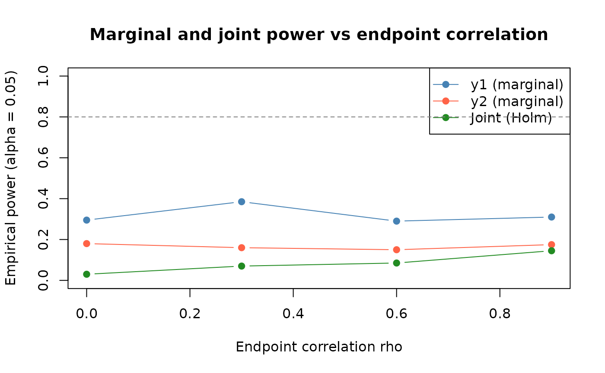

Example 2: Two arm | Fixed design | Two correlated continuous endpoints | t-test
example-2.Rmd
# Core package that provides Timer, Population, Trial, deterministic_schedule, add_timepoints, ...
library(rxsim)
# Utilities
library(dplyr)
#>
#> Attaching package: 'dplyr'
#> The following objects are masked from 'package:stats':
#>
#> filter, lag
#> The following objects are masked from 'package:base':
#>
#> intersect, setdiff, setequal, union
library(MASS) # for mvrnorm (simulate correlated endpoints)
#>
#> Attaching package: 'MASS'
#> The following object is masked from 'package:dplyr':
#>
#> selectMany trials evaluate co-primary or key secondary endpoints simultaneously. Ignoring endpoint correlation when planning a study leads to incorrect power estimates. This example shows how to simulate two correlated continuous endpoints (e.g., a primary efficacy score and a key secondary biomarker) and apply multiplicity adjustment via Holm’s procedure. See Example 1 for the simpler single-endpoint baseline.
Unique focus: correlated endpoints via
MASS::mvrnorm, Holm correction, joint vs marginal rejection
rates as correlation varies.
Common scaffolding (packages, scenario declaration, and
replicate_trial() pattern) follows Example 1; this vignette only expands the
parts that change for correlated multi-endpoint analyses.
Scenario
We consider a two-arm, fixed design with two correlated continuous endpoints per subject. A single analysis fires at full enrollment.
# Total target sample size
sample_size <- 100
# Arms and allocation (balanced)
arms <- c("pbo", "trt")
allocation <- c(1, 1)
# Endpoint model parameters
# Endpoint correlation structure (common across arms for simplicity)
rho <- 0.60 # correlation between endpoint1 and endpoint2
sd1 <- 1.00 # SD of endpoint1
sd2 <- 1.00 # SD of endpoint2
# Mean structure per arm
mu1_pbo <- 0.00 # Control mean for endpoint1
mu2_pbo <- 0.00 # Control mean for endpoint2
# Treatment effects (mean shifts)
delta1 <- 0.30 # Treatment - control difference for endpoint1
delta2 <- 0.20 # Treatment - control difference for endpoint2
mu1_trt <- mu1_pbo + delta1
mu2_trt <- mu2_pbo + delta2
# Construct covariance matrix
Sigma <- matrix(
c(sd1^2, rho*sd1*sd2,
rho*sd1*sd2, sd2^2),
nrow = 2, byrow = TRUE
)
scenario <- tidyr::expand_grid(
sample_size = sample_size,
allocation = list(allocation),
rho = rho,
delta1 = delta1,
delta2 = delta2
)
enrollment_fn <- function(n) rexp(n, rate = 1)
dropout_fn <- function(n) rexp(n, rate = 0.01)rho = 0.60 represents a moderate positive correlation
between the two endpoints - plausible when both reflect the same
underlying biological process. The covariance matrix Sigma
is constructed from the marginal SDs and correlation using the standard
identity cov(y1, y2) = rho × sd1 × sd2. Treatment shifts are delta1 =
0.30 SD for the primary endpoint and delta2 = 0.20 SD for the secondary,
reflecting a scenario where the primary endpoint is more sensitive to
treatment.
Populations
For each arm we simulate two correlated endpoints
per subject using MASS::mvrnorm. In this vignette, that
arm-specific generator is the custom data generating
model for endpoint behavior.
# Create closure to capture parameters
mk_population_generator <- function(mu_y1, mu_y2) {
function(n) {
xy <- MASS::mvrnorm(
n = n,
mu = c(mu_y1, mu_y2),
Sigma = Sigma
)
data.frame(
id = seq_len(n),
y1 = xy[, 1],
y2 = xy[, 2],
readout_time = 1
)
}
}
population_generators <- list(
pbo = mk_population_generator(mu1_pbo, mu2_pbo),
trt = mk_population_generator(mu1_trt, mu2_trt)
)MASS::mvrnorm draws n samples from a
multivariate normal with the given mean vector and covariance matrix
Sigma. The closure pattern
(mk_population_generator) captures the arm-specific means
at definition time, so each call to
population_generators$pbo(n) or
population_generators$trt(n) produces data under the
correct arm parameters. Endpoint correlation flows entirely through the
shared Sigma matrix - changing rho in the
scenario automatically updates both arms.
Conditions
This is a fixed design: perform analysis once. We run two independent two-sample t-tests (one per endpoint).
analysis_generators <- list(
final = list(
trigger = enroll_trigger(1.0, sample_size),
analysis = function(df, current_time) {
df_e <- df |> subset(!is.na(enroll_time))
p1 <- t.test(y1 ~ arm, data = df_e)$p.value
p2 <- t.test(y2 ~ arm, data = df_e)$p.value
padj <- p.adjust(c(p1, p2), method = "holm")
data.frame(
scenario,
p_y1 = unname(p1),
p_y2 = unname(p2),
p_holm_y1 = unname(padj[1]),
p_holm_y2 = unname(padj[2]),
n_total = nrow(df_e),
n_pbo = sum(df_e$arm == "pbo"),
n_trt = sum(df_e$arm == "trt"),
stringsAsFactors = FALSE
)
}
)
)The two t-tests are run independently on the enrolled subset,
producing unadjusted p-values p_y1 and p_y2.
p.adjust(..., method = "holm") applies Holm’s stepwise
procedure. padj[1] and padj[2] stay in
endpoint order (y1, y2) and account for
familywise error across both endpoints, so each adjusted value is never
smaller than its unadjusted counterpart.
Simulate
set.seed(3)
trials <- replicate_trial(
trial_name = "two_endpoints_fixed_design",
sample_size = sample_size,
arms = arms,
allocation = allocation,
enrollment = enrollment_fn,
dropout = dropout_fn,
analysis_generators = analysis_generators,
population_generators = population_generators,
n = 5
)
run_trials(trials)Results
One row per replicate, row-bound across all replicates:
replicate_results <- collect_results(trials)
replicate_results
#> replicate timepoint analysis sample_size allocation rho delta1 delta2
#> 1 1 104.48694 final 100 1, 1 0.6 0.3 0.2
#> 2 2 90.38445 final 100 1, 1 0.6 0.3 0.2
#> 3 3 98.06813 final 100 1, 1 0.6 0.3 0.2
#> 4 4 76.77642 final 100 1, 1 0.6 0.3 0.2
#> 5 5 110.74010 final 100 1, 1 0.6 0.3 0.2
#> p_y1 p_y2 p_holm_y1 p_holm_y2 n_total n_pbo n_trt
#> 1 0.81957560 0.4076493 0.81957560 0.8152986 100 50 50
#> 2 0.24249831 0.4246676 0.48499663 0.4849966 100 50 50
#> 3 0.20061606 0.1935887 0.38717732 0.3871773 100 50 50
#> 4 0.05002922 0.6006129 0.10005843 0.6006129 100 50 50
#> 5 0.03988021 0.7102853 0.07976043 0.7102853 100 50 50collect_results() prepends replicate,
timepoint, and analysis columns to the four
p-value columns. p_holm_y1 and p_holm_y2 will
always be >= their unadjusted counterparts because Holm correction is
more conservative. Because the two endpoints are positively correlated
(rho = 0.6), replicates that reject for y1 tend to also reject for y2 -
joint rejection probability exceeds what you would expect for
independent endpoints under the same effect sizes.
Power curve
Higher endpoint correlation affects the joint rejection rate in a
counter-intuitive way: positive correlation means both endpoints tend to
move together, so a trial that is “lucky” in one endpoint is often lucky
in the other. The following sweep quantifies marginal and joint power
across four rho values.
set.seed(43)
n_reps_pw <- 200
rho_vals <- c(0.0, 0.3, 0.6, 0.9)
pw_df3 <- do.call(rbind, lapply(rho_vals, function(r) {
Sig_r <- matrix(c(1, r, r, 1), 2)
pop_pw <- list(
pbo = local({
S <- Sig_r
function(n) {
xy <- MASS::mvrnorm(n, c(0, 0), S)
data.frame(id = 1:n, y1 = xy[, 1], y2 = xy[, 2], readout_time = 1)
}
}),
trt = local({
S <- Sig_r
function(n) {
xy <- MASS::mvrnorm(n, c(delta1, delta2), S)
data.frame(id = 1:n, y1 = xy[, 1], y2 = xy[, 2], readout_time = 1)
}
})
)
an_pw <- list(final = list(
trigger = enroll_trigger(1.0, sample_size),
analysis = function(df, ct) {
d <- subset(df, !is.na(enroll_time))
p1 <- t.test(y1 ~ arm, data = d)$p.value
p2 <- t.test(y2 ~ arm, data = d)$p.value
pa <- p.adjust(c(p1, p2), method = "holm")
data.frame(p1 = p1, p2 = p2, pa1 = pa[1], pa2 = pa[2])
}
))
tr <- replicate_trial(
"pw3", sample_size, arms, allocation,
enrollment_fn, dropout_fn, an_pw, pop_pw, n_reps_pw
)
invisible(run_trials(tr))
res <- collect_results(tr)
data.frame(
rho = r,
power_y1 = mean(res$p1 < 0.05),
power_y2 = mean(res$p2 < 0.05),
power_joint = mean(res$pa1 < 0.05 & res$pa2 < 0.05)
)
}))
matplot(
pw_df3$rho,
pw_df3[, c("power_y1", "power_y2", "power_joint")],
type = "b", pch = 19, lty = 1,
col = c("steelblue", "tomato", "forestgreen"),
xlab = "Endpoint correlation rho",
ylab = "Empirical power (alpha = 0.05)",
main = "Marginal and joint power vs endpoint correlation",
ylim = c(0, 1)
)
legend("topright",
legend = c("y1 (marginal)", "y2 (marginal)", "Joint (Holm)"),
col = c("steelblue", "tomato", "forestgreen"),
lty = 1, pch = 19)
abline(h = 0.80, lty = 2, col = "grey50")
Next steps
- Example 3 - adds a time-to-event endpoint alongside the continuous one
- Population - endpoint data setup for continuous, binary, and time-to-event outcomes
-
Enrollment and Dropout - piecewise
enrollment with
deterministic_schedule()